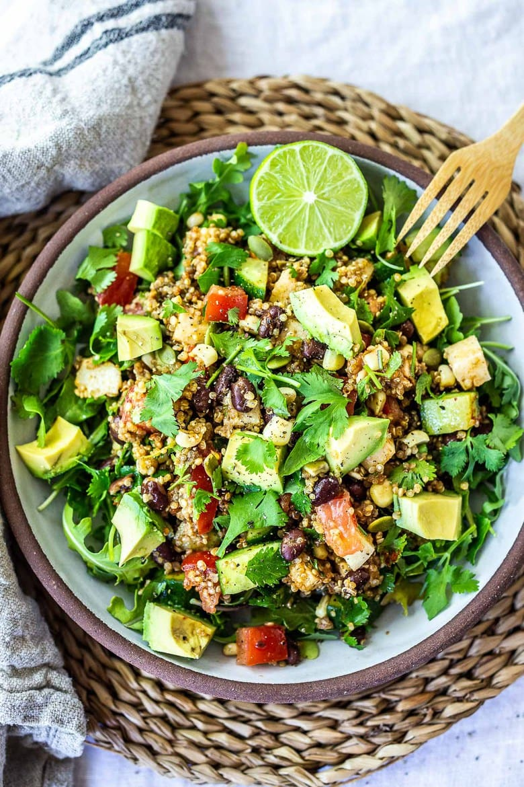

Veggie Taco Salad

Description
This Quinoa Taco Salad is one of my favorite lunches – it’s so easy to throw into a container on the way out the door. It has a great balance of veggies, fiber, protein, and healthy fat to keep you full and satisfied.
Ingredients
- Romaine Lettuce or spring mix
- Quinoa
- Black Beans
- Cherry Tomatoes
- Avacados
- Lime
- Tortilla Chips
- Jalapeño Ranch Dressing
- Cilantro
Steps
- Combine greens, halved tomatoes, and avacado in a bowl
- Cook quinoa in small saucepan
- Drain and rinse black beans
- Add quinoa, black beans, and dressing into the bowl
- Squeeze half lime, add tortilla chips and cilantro as garnish